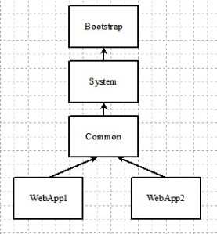

Tomcat: Class loaders mechanism

Tomcat creates the class-loaders with the parent-child hierarchy as shown in the diagram. The class loading is fairly intuitive. However a pragmatic developer needs to understand it properly to avoid problem with class instantiation since it differs a bit from the typical Java class loading mechanism.
Tomcat loads classes in the order shown below also described extensively in the Tomcat documentation. The quirk with the WebAppClassLoader is that it searches it’s local repositories first before delegating to the parent class loader, the exception being the JRE base classes.

Web App class loading order
| Loader | What is loaded? |
|---|---|
| Web Application class loader | $CATALINA_HOME/webapps/<webapp>/WEB-INF/lib,$CATALINA_HOME/webapps/<webapp>/WEB-INF/classes |
| Bootstrap class loader | JRE base and endorsed classes, $CATALINA_HOME/endorsed |
| System class loader | $CATALINA_HOME/bin/bootstrap.jar,$CATALINA_HOME/bin/tomcat-juli.jar |
| Common class loader | $CATALINA_HOME/lib |
Few other quirks
Tomcat’s way of resolving class-paths is different from a typical Java program. The JVM bootstrap loader loads the core Java libraries similar to a typical Java program using the JAVA_HOME environment variable. The start-up script overwrites the system class path and loads bootstrap.jar and tomcat-juli.jar. As a result, class-paths declared in the system class-path are not visible to Tomcat. These class-paths can be declared in $CATALINA_HOME/conf/catalina.properties instead.
Tomcat’s way of resolving class-paths has differed from release to release. Server and shared loaders are handles by the common loader if the attributes are not specifically defined. One can also specify an external repository.